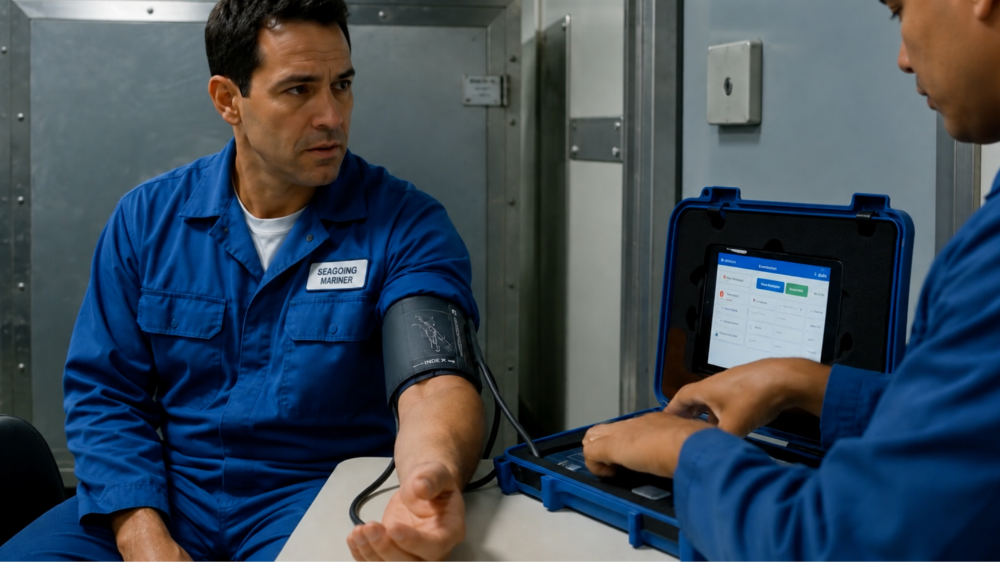
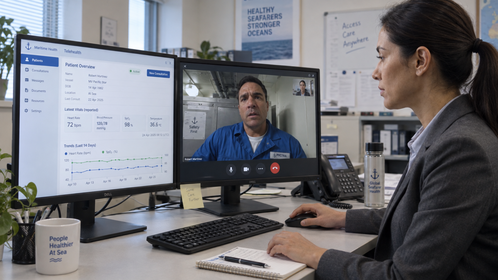
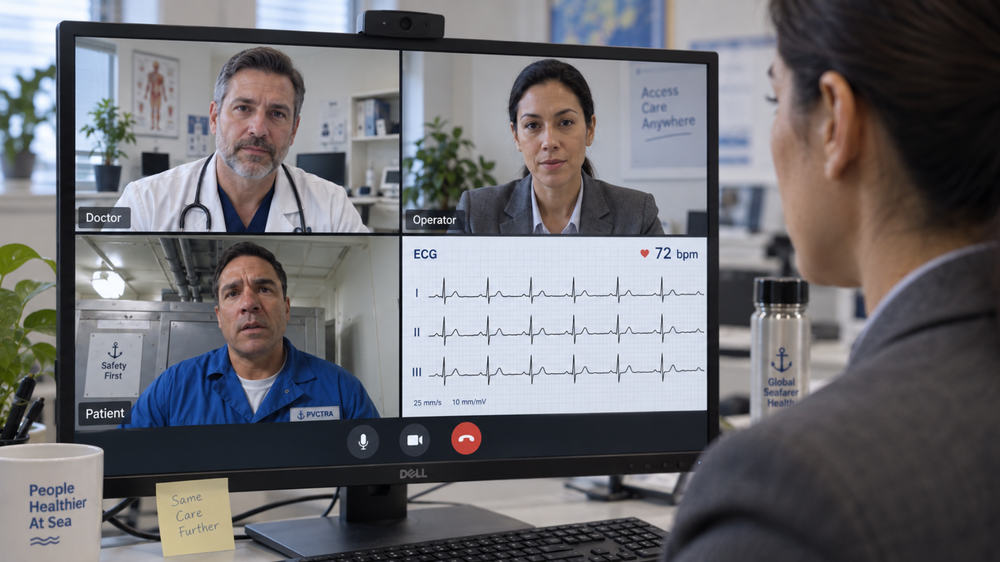
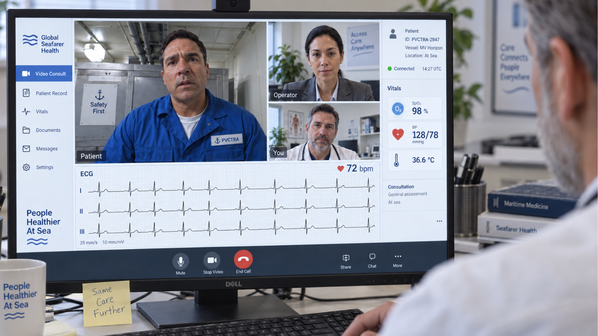

Remote medical support for ships, offshore sites and other locations far from a hospital.
When medical help is far away, SmartFuture’s Emergency Kit connects people on site with a remote medical team. Live video, connected medical devices and patient information come together in one platform, helping the remote care team assess the situation and guide the person on site.
An emergency telemedicine kit combines connected medical devices, live video and a digital platform to support medical care in remote locations. A person on site can capture vital signs and other clinical information while a remote medical team reviews the information and provides guidance.
A simple tablet interface helps the person on site connect with the remote medical team and use the available medical devices.
Live video and medical device readings give the remote medical team more information to assess the situation and guide next steps.
Case information, readings, notes and other relevant records can be kept together to support follow-up and continuity of care.
From the first call to medical assessment and follow-up, the Emergency Kit connects the person on site with a remote medical team in four simple steps.

The responder opens the kit and starts the tablet. The tablet and connected medical devices are configured in advance for use at the remote site.

Start a live video call so the remote medical team can see and communicate with the person on site.

Connected medical devices send supported readings to the platform, giving the remote medical team additional information to assess the situation.

The remote medical team can provide guidance based on the available information, while relevant readings, notes and case information are kept together for follow-up.
Each Emergency Kit can be configured with the medical devices and communication tools required for your remote care model.
A configured tablet provides access to the telemedicine platform, video communication, medical device readings and case information.
Choose from a range of medical devices based on your requirements, with supported devices configured and paired with the platform.
Hands-free video allows the remote medical team to view the responder's perspective while communicating with the person on site.
Give your remote medical team one place to access active and previous cases, patient information, readings and communication.
Configured Around Your Requirements
We work with established medical device manufacturers and are not tied to a single brand. Devices can be selected around your clinical requirements, environment and use case.
Each Emergency Kit can be configured to your requirements.
SmartFuture’s Emergency Kit is designed for locations where medical support may be far away or difficult to access. The kit can be configured for fixed sites, mobile operations and remote environments.
Remote sites do not always have reliable connectivity. The platform is designed to support remote operations, with relevant information captured on the tablet and synchronised when connectivity is available.
Give your remote medical team visibility across active and previous cases from one platform. They can join calls, review available readings and case information, add notes and support handover between team members.
See the site, patient information, available readings and care team activity in one place.
Keep relevant case information, readings, notes and other available records together for future reference and follow-up.
Give the remote medical team access to live communication and available medical device readings, rather than relying only on a verbal description.
Help the medical team assess the available information and provide guidance on appropriate next steps.
Keep relevant readings, notes and case information together to support follow-up, handover and review.
See how Emergency Kits can connect crews in remote maritime environments with medical support on shore.
It is a portable case holding a tablet and wireless medical devices. It lets someone on site be guided by a doctor who is somewhere else, with live video and live readings instead of a phone call.
Whoever is there. A ship's officer, a site safety officer, a school nurse, a first responder. Basic first-aid training is enough, because the remote doctor guides each step.
The kit is built for remote sites. Readings and notes are captured on the tablet and sync when the connection returns.
You do, or your medical assistance provider does. SmartFuture provides the kit and the platform that connects the two ends — we are the technology, not the medical service.
They let the doctor see exactly what the responder sees, while the responder keeps both hands on the patient. They are optional and not every programme uses them.
Yes. Notes, captured readings, photos and video recordings are kept against the case, so there is a complete record afterwards.
Yes. Kits are built per programme. You tell us the environment and the risks, and we configure the devices around them.
Yes. SmartFuture is white-label, so the kit interface and the control room can carry your organisation's name and look.
Tell us where you operate and how your remote medical support works. We’ll help you configure the devices, platform, connectivity and workflows around your requirements.